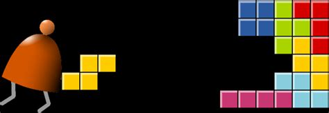
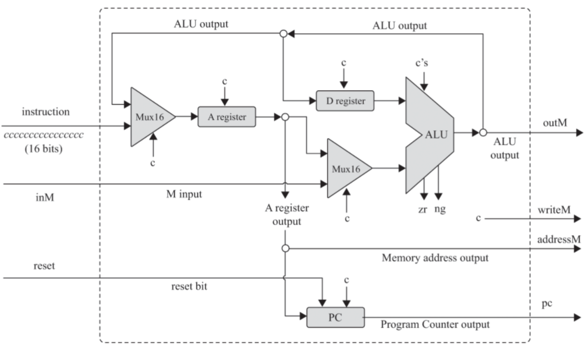
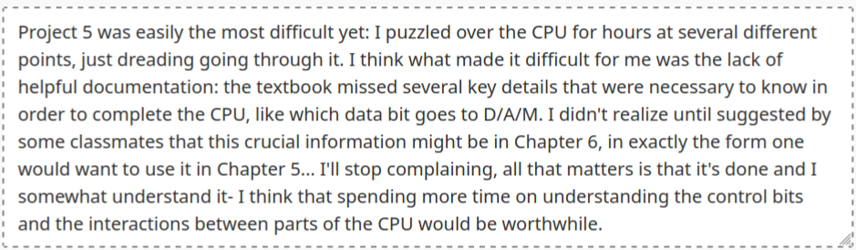
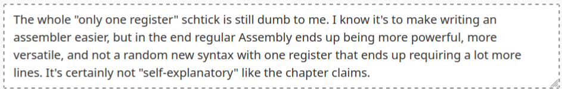
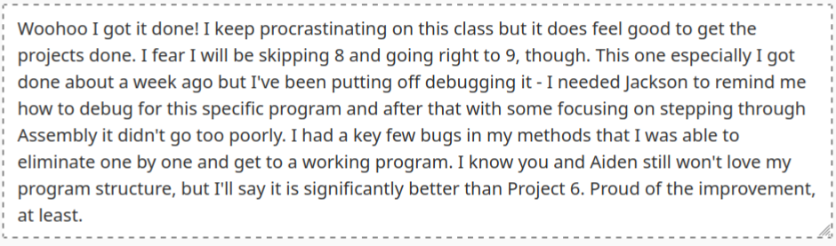
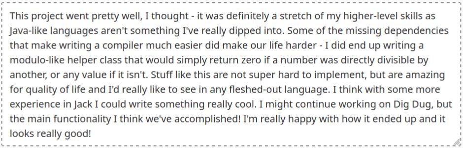
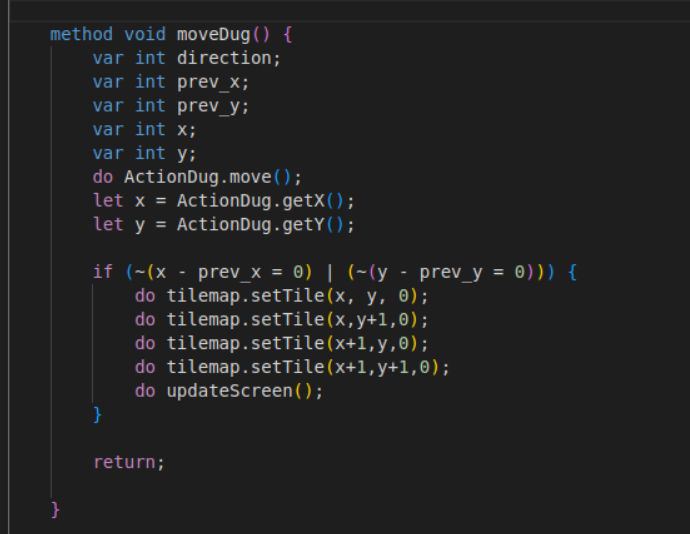

Reflection on ECEG 431
A reflection on ECEG 431, Computer Systems, in the format of a Rags to Riches story construct.
More about Computer Systems may be found in my portfolio under the ECEG431 post.

Rags
My troubles really started in between Projects 4 and 5. The first several projects writing in their HDL were fairly simple, and all were recreating concepts that I had previously covered in some depth. For example, logic gates were a familiar topic to me in ECEG 241 and as such required little true thought to create in HDL. For the first three projects my struggle points were almost entirely syntax based, all of which were straightforward to figure out by checking examples or documentation.
Project 5 was creating the CPU in HDL. Conceptually, the structure of RAM was new to me but simple to figure out by observing the diagrams in the textbook. During Project 5 there was less to go off of: they intentionally left out some important information for us to figure out, and that became a pain point for me through much of the rest of the projects.
One thing of note is that several of my reflections after this point focus on complaining about the quantity or quality of documentation available. Like I said in my Chapter 4 reading, “It’s certainly not ‘self-explanatory’ like the chapter claims.” Something that I struggled with for much of the class was needing to look at the surrounding chapters, sometimes ones we hadn’t read yet, or asking classmates who had worked ahead to find the proper documentation that I needed to complete a project. This sometimes manifested as having a functional program that did not match the output parameters required by the autograder, or by missing a key point in the reading that explained what the control bits for the CPU should be, for example.



Riches
However, my troubles didn’t last too long. By the time we moved onto further projects, I did get some of my troubles straightened out. Projects 7 and 9 both went more smoothly, and I felt that they stretched my programming skills without being too impossible. I do feel that moving through these projects has improved my skills, specifically adapting to new languages and writing quality code (using best practices and good structure).
Java is still a language I’m unfamiliar with, but Jack’s simple syntax was quite easy to pick up and use. I feel that if I need to pick up Java or a similar language I would be comfortable doing so with a syntax guide and not much else. Using high level structures is something I’m confident on. I know much of my early code was quite “Python-ified” and not structured ideally for future use or for working with, but it did improve in the later projects. Like I said in my Project 7 reflection, “Proud of the improvement, at least.” I think seeing how some of these programs are actually implemented and how those high level structures apply to all of the low level work we did, from HDL to Assembly, really helped me to further understand what makes quality code and what I should be focusing on when writing programs.
Another thing that ended up happening was I ended up better at asking for help by the end of the course than I was at the beginning. I struggle, especially when some classmates or friends are more advanced than I am, with feeling “less than” for not being as good at something. This manifested a lot during 431, and during some projects with me struggling through it, trying to do it my own way and wasting a lot of time and energy on stupid stuff that I could have asked one simple question about. However, by the end of the course and especially with project 9 I feel that I improved in this sense. Having a partner to work with made being transparent with him and asking for help a lot easier than doing it in front of the class or those peers who are more skilled. I feel that asking for help in these scenarios is still difficult for me but I am more comfortable with it after taking this class, which I’m thankful for.


